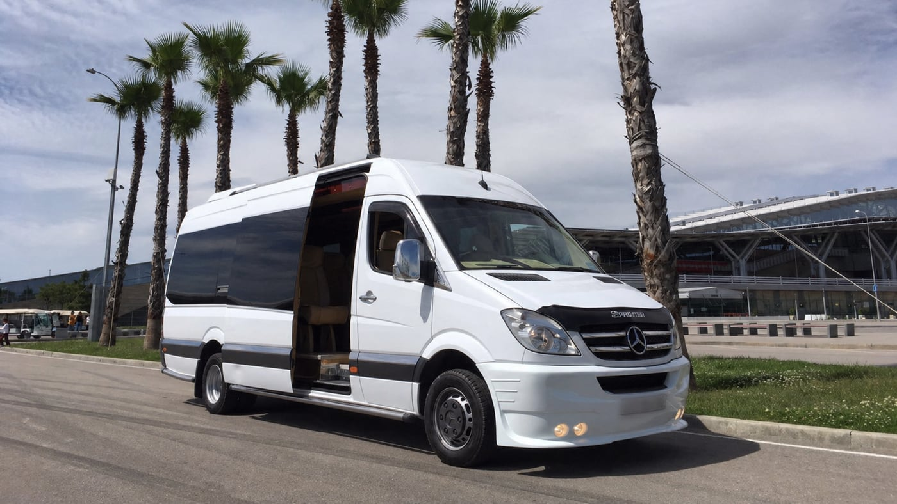
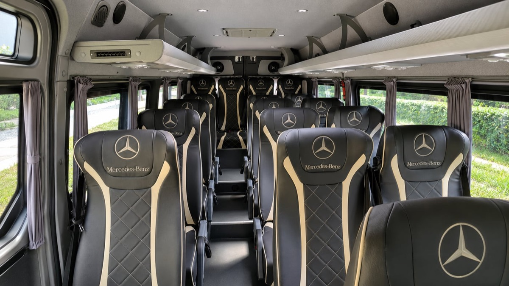
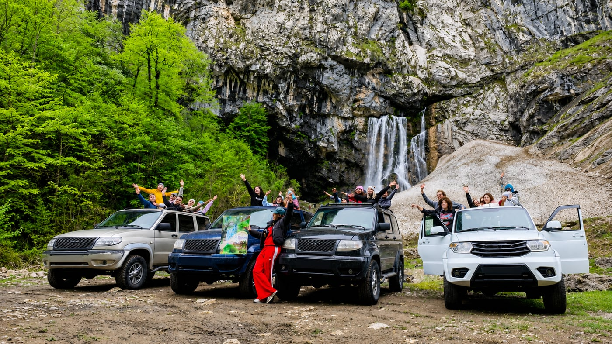
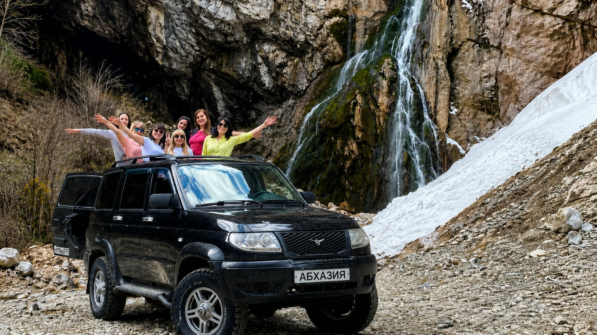
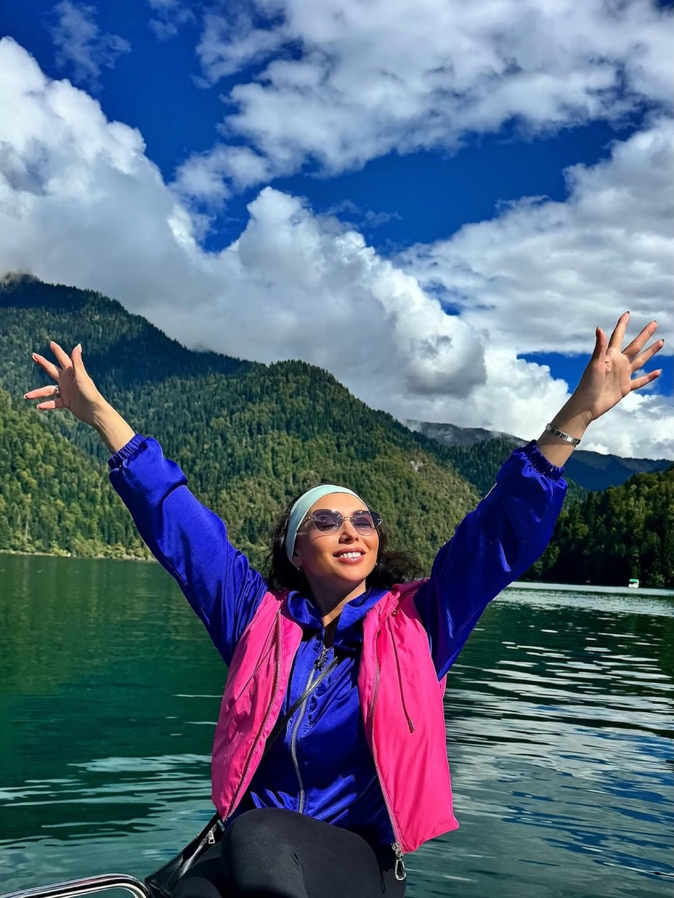
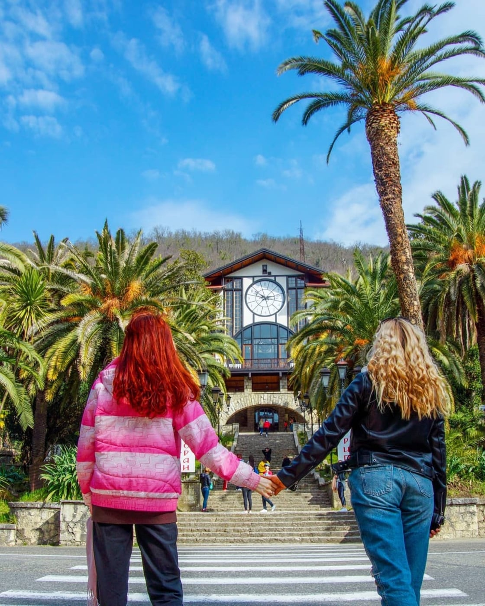
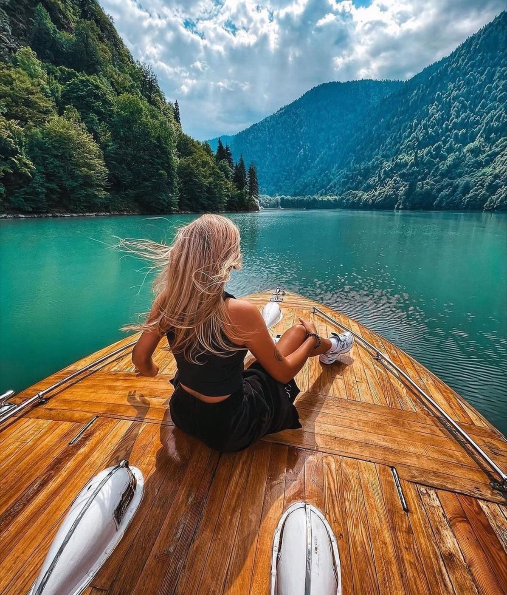
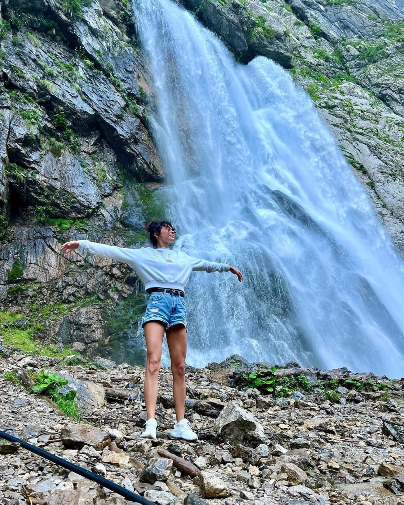
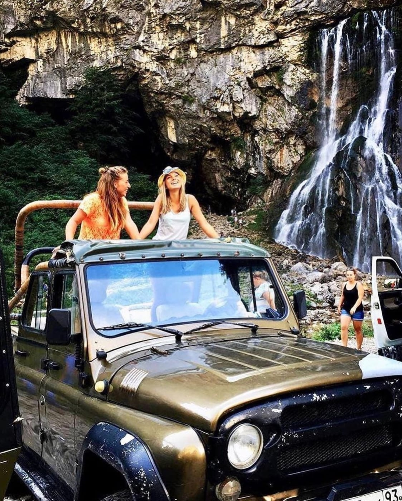
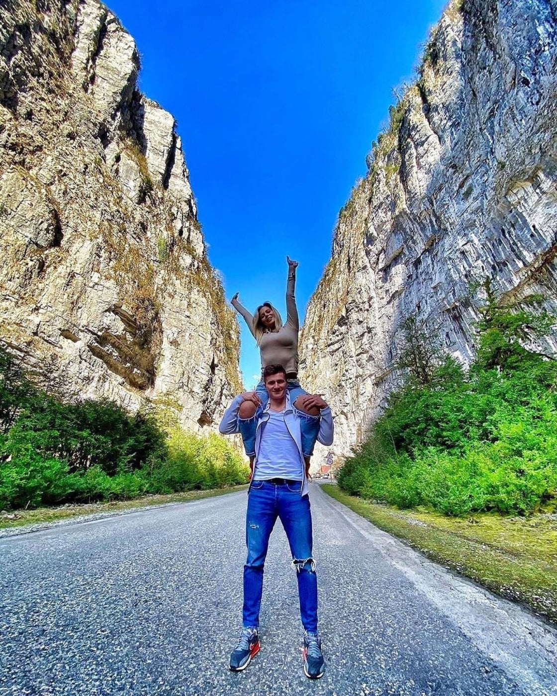

Выберите экскурсию и забронируйте место — ответим в течение 5–10 минут
Популярные экскурсии


Термальные источники Кындыг
Горячие источники и прогулка в Сухуме
2 часа купания в термальных бассейнах

На чём едем
Транспорт зависит от выбранной экскурсии: автобусные маршруты проходят на Mercedes Sprinter, джип-тур — на УАЗ Патриот.

Автобусные экскурсии
Золотое кольцо Абхазии и термальные источники Кындыг проходят на микроавтобусе Mercedes Sprinter. Группы — до 18 человек.


Джип-тур
Поездка к Гегскому водопаду проходит на УАЗ Патриот. В джипе — до 8 человек.

Как проходит бронирование
-
Вы оставляете заявку
Указываете телефон и, если хотите, имя. Мы сразу получаем заявку.
-
Мы связываемся с вами
Отвечаем в течение 5–10 минут и уточняем детали поездки.
-
Подтверждаем детали
Согласуем дату, время выезда и удобную точку посадки.
-
Оплата после подтверждения
Сначала всё уточняем, затем фиксируем место по условиям бронирования.
- Забираем из Сочи, Адлера и Сириуса
- Помогаем с вопросами по границе
- Подтверждаем бронь заранее
Оплата и гарантии
Чтобы закрепить место в группе, оформляется бронирование 500 ₽ с человека. Эта сумма уже входит в стоимость экскурсии. Остаток оплачивается организатору во время поездки.
Бронирование места
500 ₽ с человека — чтобы закрепить место в группе.
500 ₽ с человека — чтобы закрепить место в группе.
Основная оплата — в поездке
Остальная сумма оплачивается во время экскурсии.
Остальная сумма оплачивается во время экскурсии.
Отмена и перенос
Если планы изменились, предупредите нас заранее. При отмене не позднее чем за 24 часа сумму бронирования можно вернуть или перенести бронь на другую дату.
Если планы изменились, предупредите нас заранее. При отмене не позднее чем за 24 часа сумму бронирования можно вернуть или перенести бронь на другую дату.
- Подтверждаем бронирование сообщением
- Без полной оплаты заранее
Кто помогает вам с поездкой
«Экскурсии в Абхазию» — сервис подбора и бронирования поездок из Сочи, Адлера и Сириуса.
Помогаем выбрать маршрут, оформить бронирование и заранее разобраться с деталями поездки.
После заявки с вами связывается консультант и помогает по маршрутам, датам, границе и бронированию.
Консультант на связи
Поможем по маршрутам, датам и бронированию.
Официальные партнёры в Абхазии
Передаём заявки лицензированным туристическим фирмам и гидам.
Сопровождающий на маршруте
Во время поездки туристов сопровождают представители организатора и гиды.
Поддержка сервиса
Остаёмся на связи до, во время и после поездки.
Как проходит поездка
Забираем от отеля или ближайшей удобной точки, помогаем пройти границу и сопровождаем туристов на всём маршруте.
На автобусных экскурсиях группу ведёт экскурсовод, на джип-туре — водитель-гид.
Как всё проходит:
- Связываемся накануне — сообщаем точное время выезда и детали поездки
- Забираем утром — от отеля или ближайшей удобной точки
- Помогаем на границе — сопровождающий встречает туристов и помогает с прохождением
- Едем по маршруту — на автобусных экскурсиях с экскурсоводом, на джип-туре с водителем-гидом
Вы заранее понимаете, как всё проходит — и спокойно наслаждаетесь поездкой
- Выезд утром
- Длительность: 12–14 часов
- Сопровождение на маршруте
Документы для поездки в Абхазию
Проверьте документы заранее — это поможет спокойно пройти границу
Для прохождения российско-абхазской границы документы нужны всем туристам, включая детей. Проверьте их заранее — до бронирования поездки.
Взрослые и дети 14–18 лет
Нужен оригинал паспорта РФ или загранпаспорт.
Дети до 14 лет
Понадобится свидетельство о рождении с отметкой о гражданстве РФ или загранпаспорт.
Если ребёнок едет с родителем
Если ребёнок едет с одним из родителей, согласие второго родителя не требуется.
Если ребёнок едет с третьими лицами
Если ребёнок едет с бабушкой, родственниками, сопровождающим или другими третьими лицами, нужна нотариальная доверенность от родителей.
Иностранные граждане
Для иностранных граждан нужны паспорт и открытая многоразовая виза. Перед бронированием обязательно уточните возможность поездки у консультанта.
Задолженности и ограничения
Через границу могут не пропустить, если в отношении туриста есть судебное решение о взыскании задолженностей: кредиты, штрафы и другие долги.
Проверьте документы и ограничения заранее. Если сомневаетесь — напишите нам, подскажем.
Частые вопросы перед поездкой
Отвечаем на частые вопросы — чтобы вы заранее понимали, как всё проходит
Как проходит граница?
В большинстве случаев границу проходят спокойно.
Мы заранее объясняем, как всё устроено, и сопровождаем на месте — вы понимаете каждый этап и не остаётесь одни.
Какие документы нужны?
Для взрослых и детей 14–18 лет нужен оригинал паспорта РФ или загранпаспорт. Для детей до 14 лет — свидетельство о рождении с отметкой о гражданстве РФ или загранпаспорт.
Подробности по детям, иностранным гражданам и ограничениям на выезд смотрите в блоке «Документы для поездки в Абхазию» выше.
Можно ли вернуть сумму бронирования?
Если вы отменяете поездку не позднее чем за 24 часа до выезда, сумму бронирования можно вернуть или перенести бронь на другую дату. При отмене менее чем за 24 часа или неявке без предупреждения сумма бронирования обычно не возвращается. Если экскурсию отменяет организатор из-за погоды, дороги или других причин, предложим перенос или возврат. Болезнь и другие серьёзные обстоятельства рассматриваем индивидуально.
Это безопасно?
Экскурсии проходят по проверенным маршрутам с опытными водителями и сопровождающими.
Мы остаёмся на связи и помогаем, если во время поездки появляются вопросы.
Что если возникнут вопросы или проблемы?
Мы остаёмся на связи до, во время и после поездки.
Если что-то идёт не так — подключаемся и помогаем решить вопрос.
Сколько длится поездка?
В среднем экскурсия длится 12–14 часов.
Ранний выезд и возвращение вечером — за день вы успеваете увидеть максимум и не спешите.
Это не слишком утомительно?
Маршрут построен с остановками и временем на отдых.
Небольшие группы и комфортный транспорт делают поездку лёгкой и спокойной.
Отзывы туристов с Авито
Профиль с 2011 года. Ниже — отзывы туристов о поездках в Абхазию.
В профиле Авито есть отзывы по разным экскурсиям и активностям. На сайте собраны отзывы, связанные с поездками в Абхазию.
Золотое кольцо Абхазии · 3 марта 2026
Отличная экскурсия, организация на высшем уровне: забрали, привезли, всё показали и спокойно объяснили, куда идти. Абхазия очень понравилась — захотелось поехать ещё раз, уже летом.
Джип-тур Гегский водопад · 29 октября 2025
Катались на джипе по Абхазии. Прекрасная природа, чудесные люди, весёлые развлечения — всё сошлось и получилось потрясающе. Моё знакомство с Абхазией прошло на отлично.
Джип-тур Гегский водопад · 17 августа 2025
Удалось увидеть красивые места Абхазии, покататься на джипах, попробовать дегустации и вкусную еду. Водитель Саид веселил нас всю поездку. Ставим этой поездке 1000/10.
Термальные источники Кындыг · 30 июня 2025
Ездили с мужем на экскурсию в Абхазию. Поездка была душевная: горы, озеро Рица, вкусный обед, добрые люди, замечательный гид и водитель. Рекомендую для перезагрузки и отдыха.
Термальные источники Кындыг · 14 июня 2025
Всё прошло отлично: от общения и уточнения информации до возвращения домой. Всё чётко, быстро и продуманно. Водители, гиды и сопровождающие доброжелательные и вежливые.
Золотое кольцо Абхазии · 20 мая 2025
Быстро договорились, забрали с ближайшей остановки от места проживания. Гид интересно рассказывала историю Абхазии и её достопримечательностей. Природа потрясает своей красотой.
Фото с маршрутов по Абхазии






Выберите экскурсию и поехали
Подберите маршрут и удобную дату — места на ближайшие выезды лучше бронировать заранее
Выбрать экскурсиюНе знаете, какую экскурсию выбрать?
Напишите нам или позвоните — подберём лучший вариант под ваш отдых
Телефон: +7 967 800-75-52